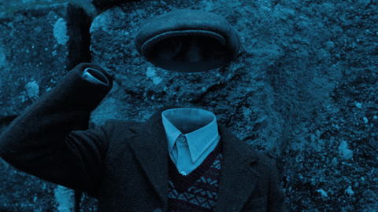
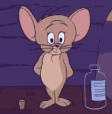
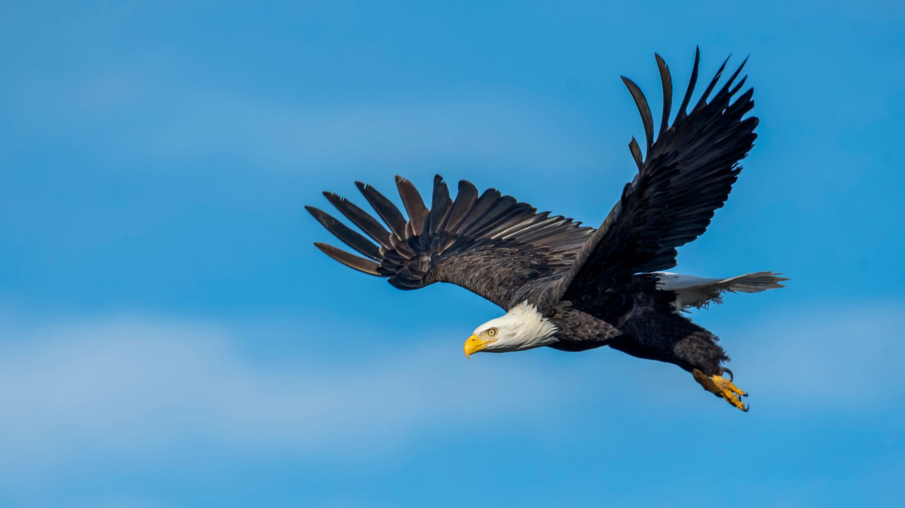
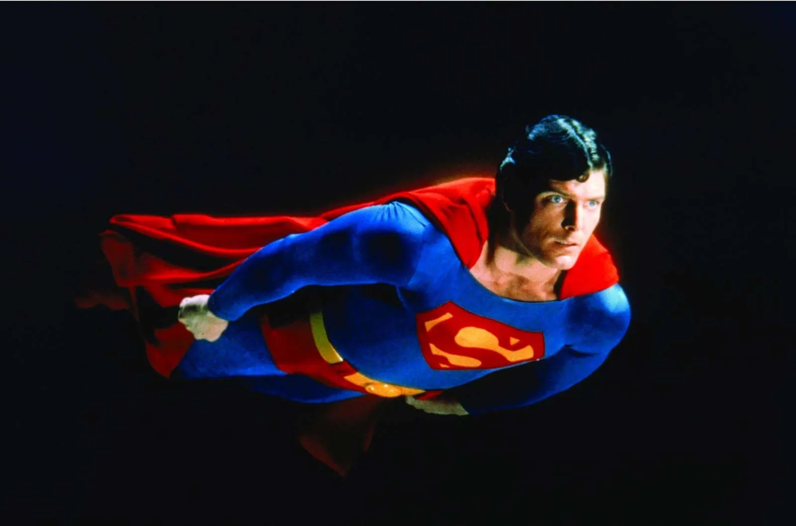
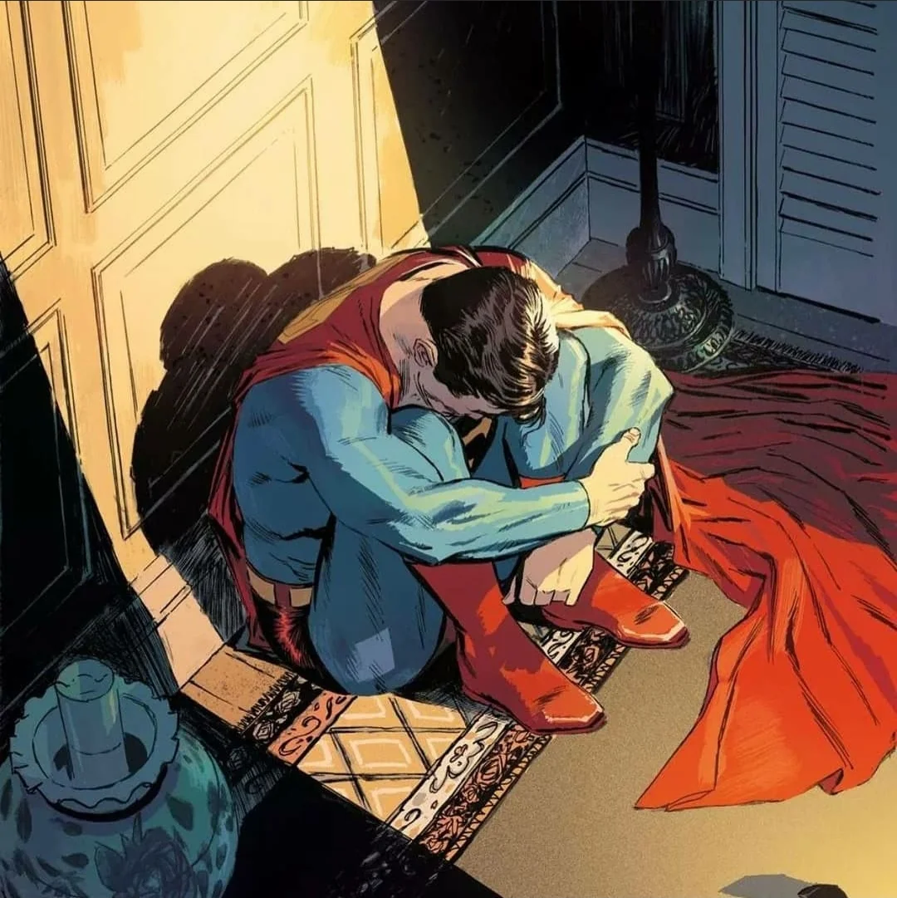

Reasons to Choose Invisibility:
by Zakia Sultana

Advantages
- Privacy and Secrecy: Invisibility allows you to go unnoticed, making it easier to avoid unwanted attention and gather information discreetly.
- Stealth and Safety: You could move around without being detected, making it easier to navigate dangerous situations or avoid conflicts.
- Investigative Abilities: Invisibility could be useful for solving mysteries, uncovering secrets, or conducting surveillance without being seen.
- Playful Pranks: You could have a lot of fun playing harmless pranks on friends and family, adding an element of surprise and laughter to everyday life.
Challenges
- Loneliness: Being invisible might lead to feelings of isolation, as you would be hidden from others and unable to interact freely
- Ethical Dilemmas: The power of invisibility could tempt you to invade people's privacy or commit unethical acts, raising questions about morality and responsibility
- Physical Presence: IEven while invisible, you would still occupy physical space, meaning you could accidentally bump into objects or people, revealing your presence.
- Limited Visibility: Navigating while invisible might be challenging, as you would need to ensure you don't accidentally walk into things or get hurt.
Reasons to Choose Flight:
by Daniel Pineda

Advantages
- Cool Factor: Flying just looks plain cool, Superman looks cool flying and I wanna do that as well.
- Transportation: I never have to take the bus ever again, I can just kinda go wherever I want at any time, since I can freaking fly.
- Sight-Seeing: If I wanna take a t from the world, I can fly to the top of a big mountain and drink in the view.
- Feel a closer connection to birds: I think birds are hella cute, they are the descendants of dinosaurs and that's dope. I wanna have a closer connection with them, we can bond witht the fact that we both fly.
Challenges
- Attracts unwanted attention: Being able to fly would ultimately attract a lot of attention and would probably freak people out.
- Difficulty: Realistically a human being able to fly would be extremely difficult and would require a lot of training to be able to do half-decently good.
- Wearing proper eye protection: While flying at high speeds you should be wearing goggles of some kind to protect your eyes, and that would make you look like a nerd.
- Accidents: There's a high probability to suffer an accident while flying like superman, especially when I don't have his super strength and durability.